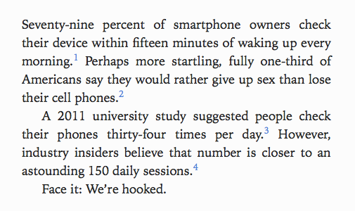

Good Habits Through Good Haptics - Breathe for Apple Watch
There’s no question that technology plays a big role in forming our habits. Hooked, an entire book on the subject, puts it perfectly in its introduction:

Whether we realize it or not, our interactions with the products surrounding us are shaping our reality. This puts an immense amount of responsibility in the hands of product designers. How will they influence us? To keep dumping money and time into Clash of Clans? Or to spend more time meditating throughout the day?
Positive vs. Negative Products
The habits formed by our use of technology are often referred to as addictions. “I’m addicted to my phone” is not an uncommon phrase. The term addiction has a negative connotation - and it’s true, a lot of the products we use encourage unhealthy behaviour. If they really have so much power, why don’t we just build a bunch of products that do good? As it turns out, it’s a lot harder than you might think, for an number of reasons.
3 Core Issues Facing Positive Products
- Things that seem good at first often have unintended side-effects, especially at scale. They grow into monsters. Facebook, anyone?
- A lot of good habits are inherently boring and hard to productize. Brushing your teeth well? An important habit. Not exactly the sort of topic you’ll be gossipping about on Twitter.
- Good habits are often rooted in something we call RL (Real Life). Technology too often distracts from, rather than augments, our perception of what’s happening around us. This is partially a shortcoming of the hardware. Let’s face it - staring at and tapping on screens isn’t the best way to transfer information. It’s imprecise and inherently distracting!
3 Core Solutions that Breathe Provides
Breathe doesn’t suffer too much from any of these common concerns. Let’s examine each in turn.
- Breathe promotes a healthy practice, drawing users inwards rather than producing more chaos in their lives. I’m sure there are ways it can be misused - the most obvious thing coming to mind being “Where is all that heart rate data going?” - but its core mission is simple and unintrusive.
- Deep breathing and meditating isn’t exactly exciting, but meditation and yoga are at least fairly well-exposed topics in our society at this point. A lot of people are keyed into their potential benefits, thus making Breathe a talking point.
- Breathe makes minimal use of looking at or tapping on screens - instead it taps you in a pattern that accelerates and decelerates, indicating the rhythm of breathing in and out. It has to be felt to be understood, but trust me - the tapping does a great job of guiding you through the session. No screen. No headphones. Nothing drawing you out of reality. Just a gentle tap remind you to focus in on it.
Breathe is a small win in a world where the majority of modern products that we consume (that consume us?) have negative consequences, intended or not. What else can we build using the principle of enhancing, rather than replacing, experience?